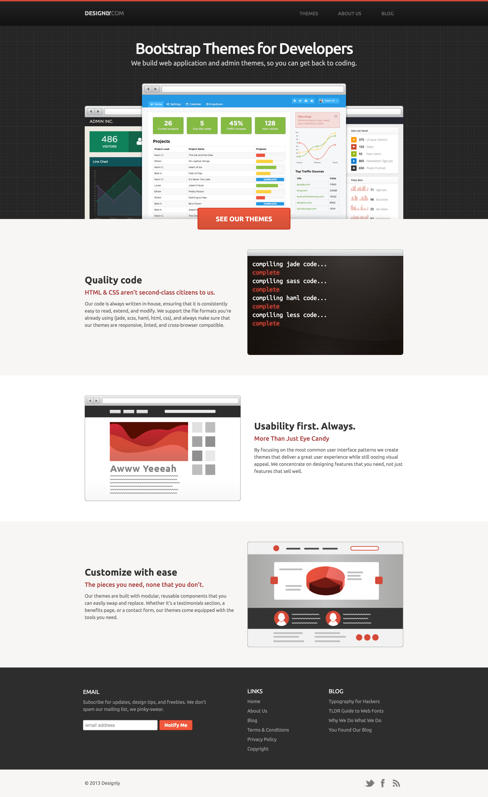
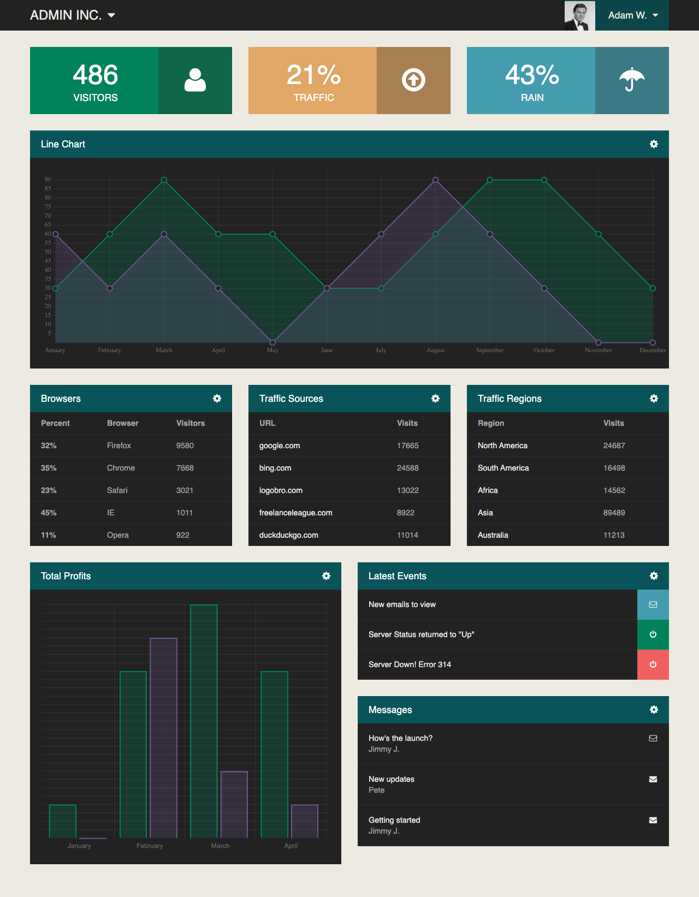
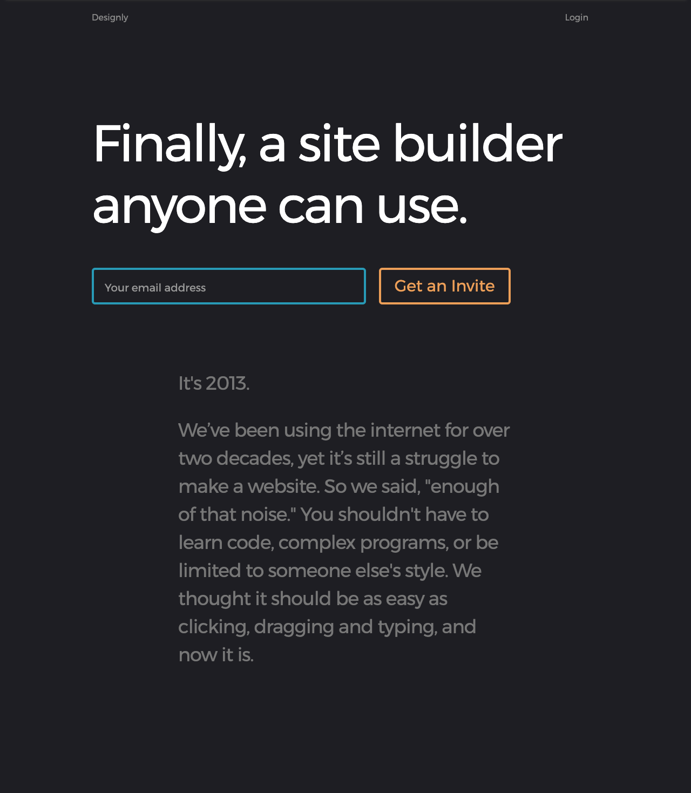
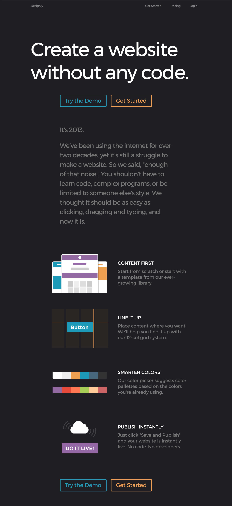
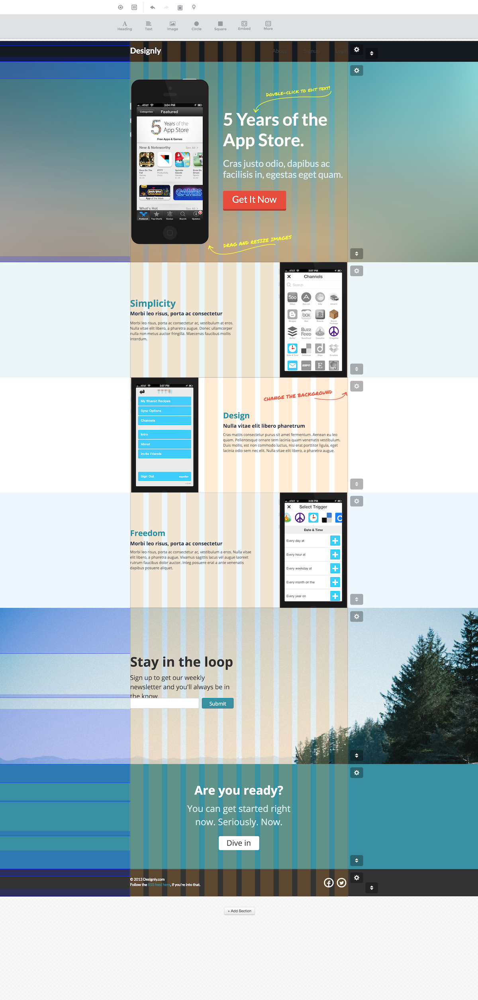
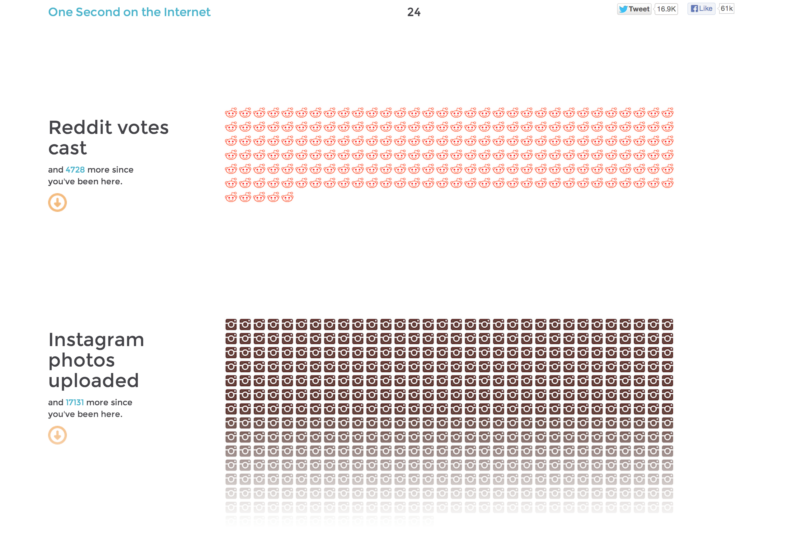
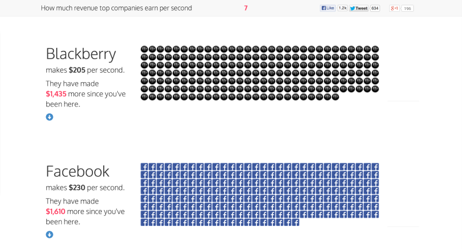

I originally thought I was just being hired to help make logos, but this job would become my introduction to the world of tech startups. The company shifted and pivoted several times, something not uncommon in startups. In the end, I was lucky the role evolved in so many different ways, many of which I never would expected.
Designly
 An illustration I made to accompany the tentative company name, Freelance League.
An illustration I made to accompany the tentative company name, Freelance League.
Early on, I helped create sample logos and design websites and templates. I also started learning more modern front-end practices on the job, which was great. Until this point, I only had taken one formal HTML/CSS class in college. We shared an office space with a few other folks who we enjoyed working around and eventually joined forces to move to California and participate in Y Combinator, a startup acceleration program.

I designed several websites for the company, this being my personal favorite. The three graphics in the middle would animate with javascript as the user scrolled by.

One of my themes, possibly hinting at my future working with dashboards more extensively.
Once we were in San Francisco with our new, larger team (five people), we shifted gears from selling website themes to building a full website creation platform. This is where I got my first real taste of product design. Until we had something to market I helped brainstorm and research what people would need and want when creating their own website. I also tried to hone in on the market we could serve.

A teaser homepage for our new product.

A later version revealing a few different features.

We designed our interface and platform for people who didn't want to deal with any code at all.
Once we had something working we felt confident in, I went back into marketing mode and created an inbound micro site called “One second on the internet” to attract visitors to the Designly beta. The idea was to show how rapidly the internet has grown and how ubiqutious it has become in such a short time. The site got picked up by a few larger blog sites which ultimately lead to quite a few signups for our beta.

The top portion of the "One Second" page. Larger groups, like the number of Google searches per second, took a long time to scroll through, which was exactly the point. I wanted a visitor to feel just how massive these numbers were.

I even found a clone site at one point.
Thanks for taking a look. Reach out anytime. I hope you’re having a nice day :)Copyright © 2013-2020 Steven Lewis